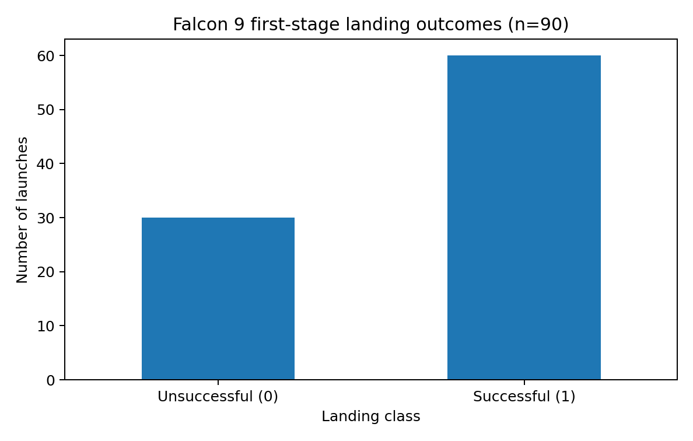
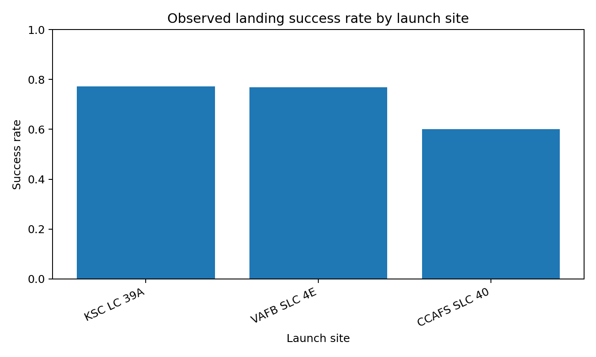
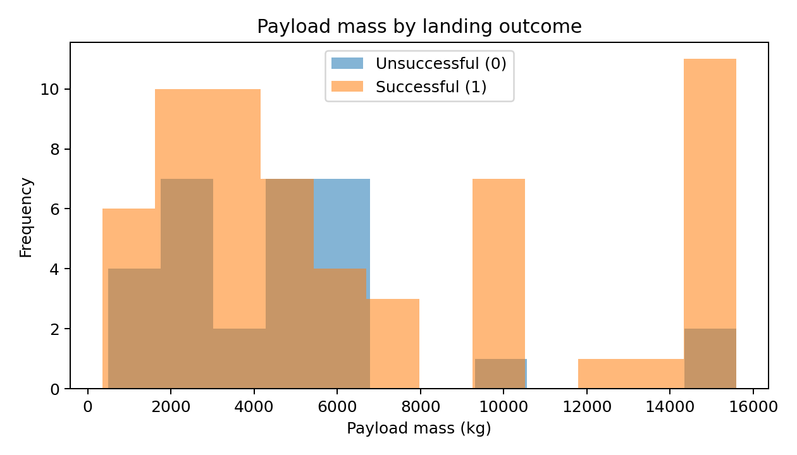
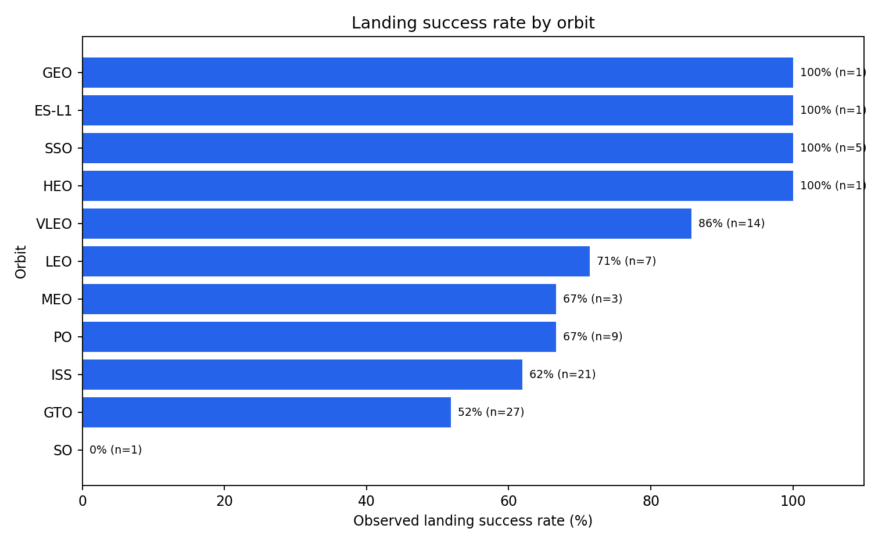
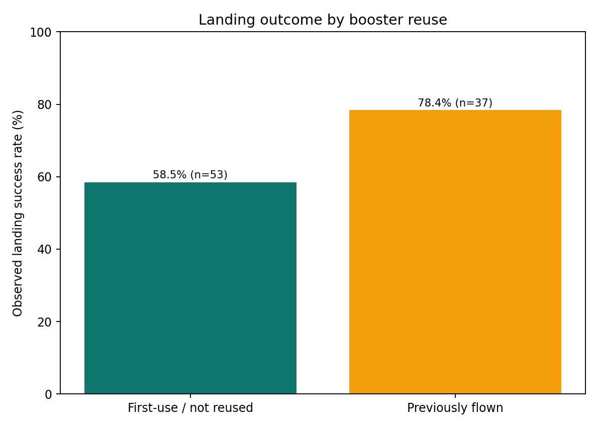
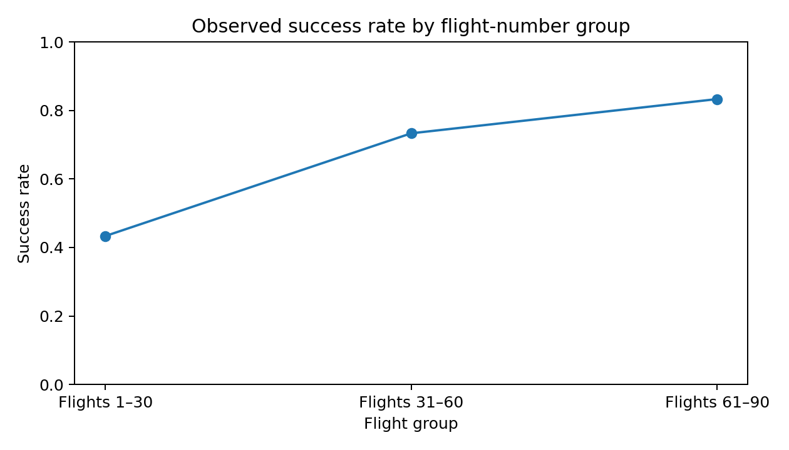
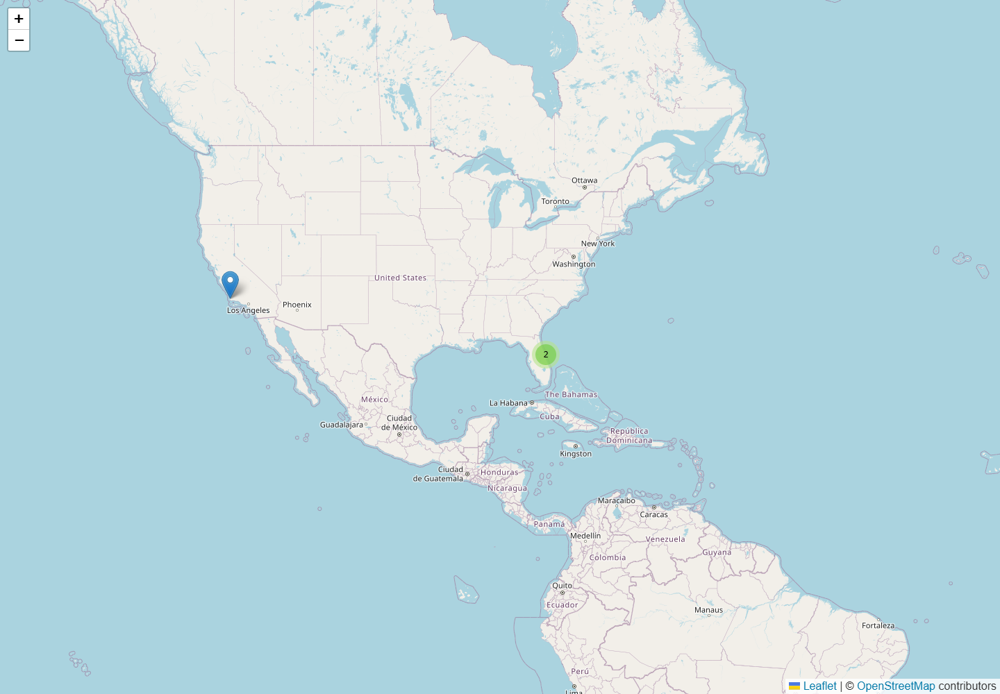
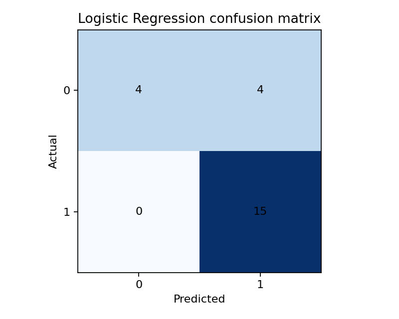
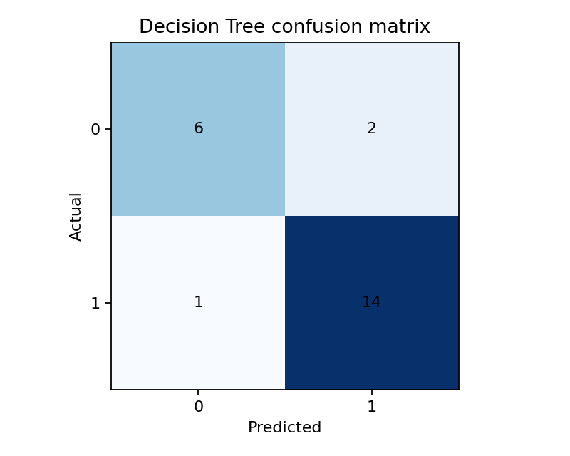
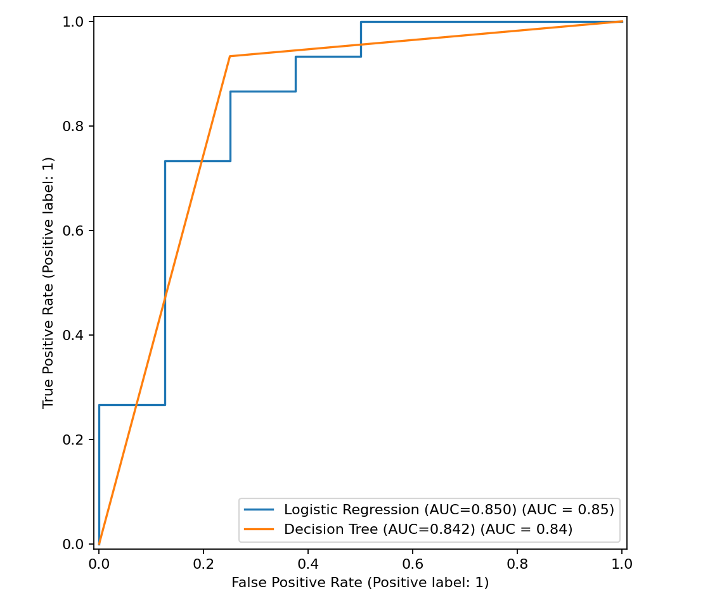

GitHub repository: https://github.com/bridrane168/SpaceX_capstone
The supplied 90-launch modeling dataset has a 66.7% landing success rate. Decision Tree test accuracy/F1 are 86.96%/0.903; Logistic Regression are 82.61%/0.882. Seven SQL queries and six EDA charts are executed and saved. Separately, five live Wikipedia pages returned HTTP 200 and yielded 699 unique Falcon 9 launch/time records covering 2010–2026. The API returned no JSON: prior DNS failures and latest HTTP 522 are documented. Dash logic and routes passed, but real browser screenshots remain pending.
Current scraper output: 699 unique flight/time records, flight numbers 1–699, five pages, 113 tables inspected, 36 selected, zero duplicate keys, 57 unknown payload masses. The refreshed Excel workbook has 113 worksheets. The old 285-row 2025–2026 extract is labeled partial and retained separately. See scraping summary and year counts.
Model dataset: 90 × 18, class 0/1 = 30/60, 26 missing LandingPad values. The model pipeline imputes and encodes within the train split.
Analysis covers site, payload, orbit, flight-number group, and booster reuse. Group rates are descriptive. Seven SQLite outputs are saved under sql_output; site counts are CCAFS 55, KSC 22, VAFB 13. KSC observed success is 17/22 (77.3%); mean payload is 4,784.56kg for class 0 and 6,765.16kg for class 1.






Genuine browser capture of bundled Leaflet/MarkerCluster map with loaded basemap tiles.

Stratified split 67 train/23 test; balanced Logistic Regression and depth-5 Decision Tree. Per-class and macro/weighted metrics are in outputs/classification_reports.csv; confusion matrices use actual predictions. Small test sample, imbalance, and post-launch leakage risk limit interpretation.
| Model | Accuracy | Precision | Recall | F1 | ROC-AUC | TN FP FN TP |
|---|---|---|---|---|---|---|
| Logistic Regression | 82.61% | .789 | 1.000 | .882 | .850 | 4 4 0 15 |
| Decision Tree | 86.96% | .875 | .933 | .903 | .842 | 6 2 1 14 |



dashboard/dash_app.py is the genuine Plotly Dash app, using the 90-row CSV. KPIs, site/orbit filters, five charts, empty-filter handling, and routes are verified. The actual Chrome window timed out at 127.0.0.1:8050; no static preview is represented as running evidence.
Detailed, paginated PDF: Final_Capstone_Report.pdf.